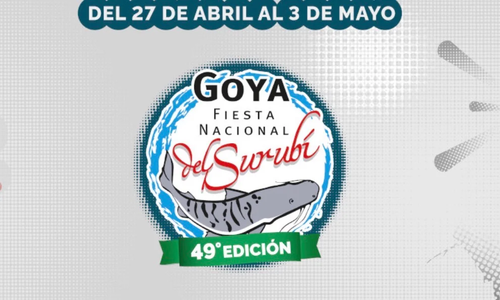

Goya se prepara para la 49 edición de la Fiesta Nacional del Surubí, que en 2026 se desarrollará del 27 de abril al 3 de mayo..

Con más de 1400 equipos y cerca de 900 embarcaciones ya inscriptas, la Fiesta Nacional del Surubí también tendrá una importante bolsa de premios, que se estima en varios cientos de millones de pesos, con reconocimientos tanto para el equipo ganador como para la pieza mayor.
La Fiesta Nacional del Surubí incluirá la tradicional Expo Goya, donde empresas vinculadas a la pesca, el turismo y la náutica presentan sus productos y servicios, convirtiendo a la fiesta en un verdadero punto de encuentro para toda la actividad. Con estos preparativos en marcha y el cupo de participantes ya completo, todo indica que la próxima edición volverá a confirmar a la Fiesta Nacional del Surubí como uno de los grandes acontecimientos del calendario deportivo y turístico argentino.